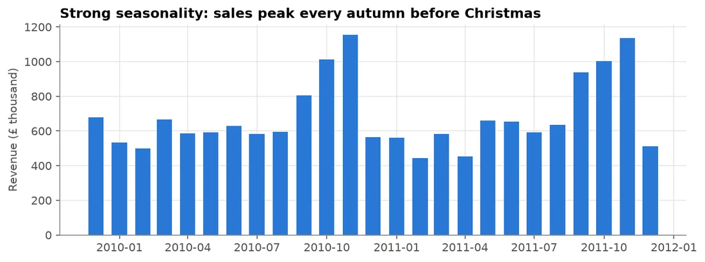
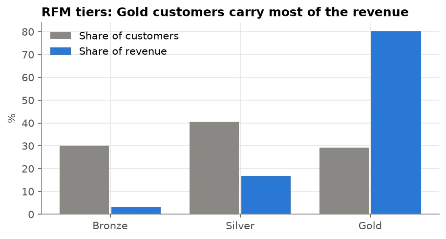
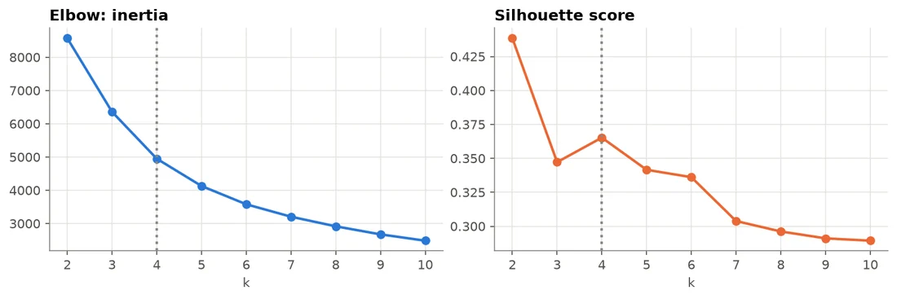
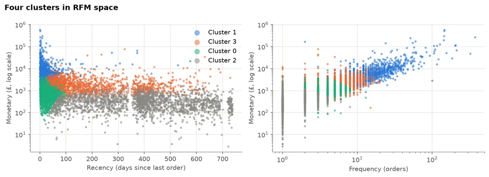
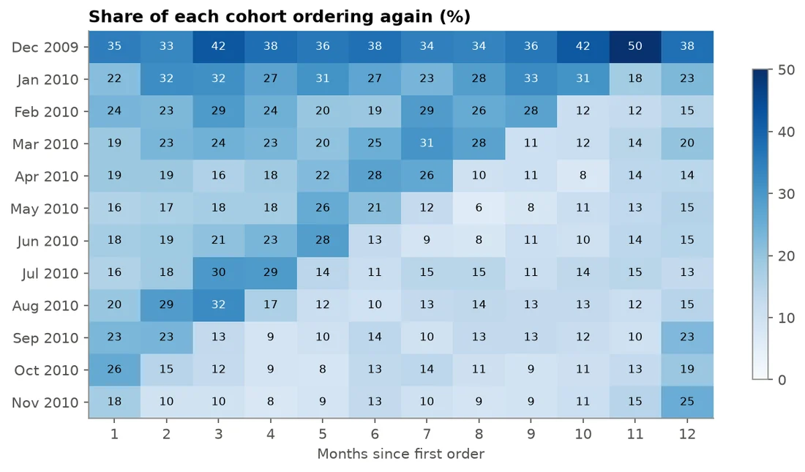

Customer analytics · Case study
Customer Segmentation: RFM and K-means for Targeted Campaigns
Four customer segments that tell marketing where to spend, whom to win back, whom to grow and whom to stop chasing, validated on what customers did in the following six months.
- 19%of customers bring in 72% of revenue
- 4segments, each with its own campaign
- 19×more spent by the top segment than lapsed buyers
- Data
- Online Retail II (UCI): two years of transactions, 5,852 customers, £17.1 million
- Methods
- Data cleaning, RFM scoring, log transform and scaling, K-means, silhouette score, out-of-time validation, SQL
- Tools
- Python, pandas, scikit-learn, SQL (DuckDB)
The problem
The imagined client is a South African online gift and homeware retailer that sends every customer the same email: the same products, the same discount, the same timing.
Question: which natural customer groups exist, and what should marketing say to each? A good answer is a handful of segments that are clearly different, easy to name, large enough to run a campaign for, and that predict future buying.
Cleaning and first look
From 1,067,371 invoice lines, removed duplicates, lines without a customer ID, cancellations, non-product lines and invalid quantities or prices, leaving 776,577 lines: 5,852 customers, 36,594 orders and £17.1 million in revenue.

Approach
- Baseline by hand: recency, frequency and monetary value scored 1 to 5 and summed into Gold, Silver and Bronze tiers.
- Hypothesis: Silver hides two groups needing opposite messages, new customers and regulars drifting away.
- K-means on log-transformed, standardised RFM values, so a few giant customers cannot dominate the distances.
- Choosing k: k = 4 is a local silhouette peak and a number of campaigns marketing can actually run.


Results

| Segment | Customers | Share of revenue | Campaign |
|---|---|---|---|
| Loyal big spenders | 1,110 (19%) | 72% | Protect and reward: early access, account contact, no discounts |
| Drifting regulars | 1,468 (25%) | 18% | Win back now: personal email with past favourites |
| New and promising | 1,220 (21%) | 6% | Grow the habit: welcome series and next-order incentive |
| Lapsed one-time buyers | 2,054 (35%) | 4% | Low-cost seasonal reactivation only |
Do the segments predict the future? Rebuilding the pipeline on data up to June 2011 only, the top segment's customers spent about 19 times as much in the next six months as the lapsed segment's (£4,075 against £210), and 93% of them bought again.

The pipeline in SQL
In a company the transactions would sit in a database, not an Excel file, so the segmentation should not depend on Python. The cleaning and RFM steps are rebuilt in SQL with DuckDB and checked against the pandas versions.
| Query | What it does | SQL used |
|---|---|---|
| Clean transactions | The cleaning rules in one query | SELECT DISTINCT, WHERE filters, regexp_matches |
| RFM scores | Recency, frequency, monetary and 1 to 5 scores per customer | CTEs, GROUP BY, NTILE(5) OVER (...) |
| Segment summary | What each segment is worth, overall and in the last 90 days | JOIN, window share of total, FILTER (WHERE ...) |
| Cohort retention | Share of each month's new customers who order again | CTEs, date_trunc, date_diff, PARTITION BY |
Checked against pandas: the SQL gives exactly the same 776,577 purchase lines, 5,852 customers and £17,068,568 of revenue, and recency, frequency and monetary match for every customer.
- New and promising customers matter more than their total suggests: about 6% of all revenue, but about 17% of revenue in the last 90 days.
- New customers are lost quickly: only about 1 in 5 orders again in the month after their first order, so the welcome series should start straight after the first order.

Recommendation
- Stop the single email: load the segment file into the email platform and run four campaigns.
- Focus effort on the two middle segments: turning new customers into regulars and catching drifting regulars before they lapse.
- Run the win-back campaign in August and September, ahead of the October and November peak.
- Refresh segments monthly, and keep a random 10% holdout per segment to measure what each campaign really changes.
Limitations
- Purchase history only: no data on interests, channel or whether a customer is a shop or an individual.
- Almost a quarter of lines are anonymous and could not be segmented.
- UK data from 2009 to 2011 in pounds: the method transfers, the exact thresholds would not.
Interested in this work?
I'm looking for data scientist and data analyst roles in South Africa or remote.